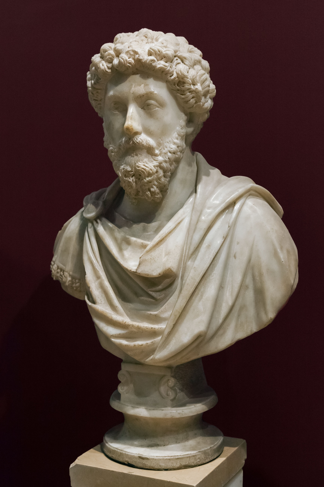

Marcus Aurelius
The last of the rulers known as the Five Good Emperors

Marcus Aelius Aurelius Verus Caesar
Here's a timeline of Marcus Aurelius's life:
- 121 - Birth of Marcus Aurelius.
- 138 - Death of Lucius Ceionius Commodus, Emperor Hadrian's intended successor.
- 145 - Marcus Aurelius marries his cousin, Emperor Antoninus' daughter Annia Galeria Faustina.
- 169 - Death of Lucius Verus; Marcus Aurelius becomes sole emperor.
- 175 - Marcus Aurelius grieves the death of his wife, Empress Faustina the Younger.
- 177 - Marcus Aurelius proclaims 16-year-old son Commodus joint emperor.
- 180 - Death of Marcus Aurelius.
Alone of the emperors, he gave proof of his learning not by mere words or knowledge of philosophical doctrines but by his blameless character and temperate way of life.-Herodian